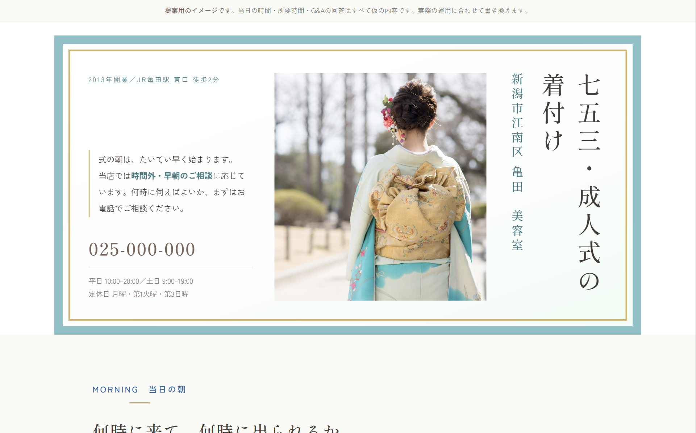
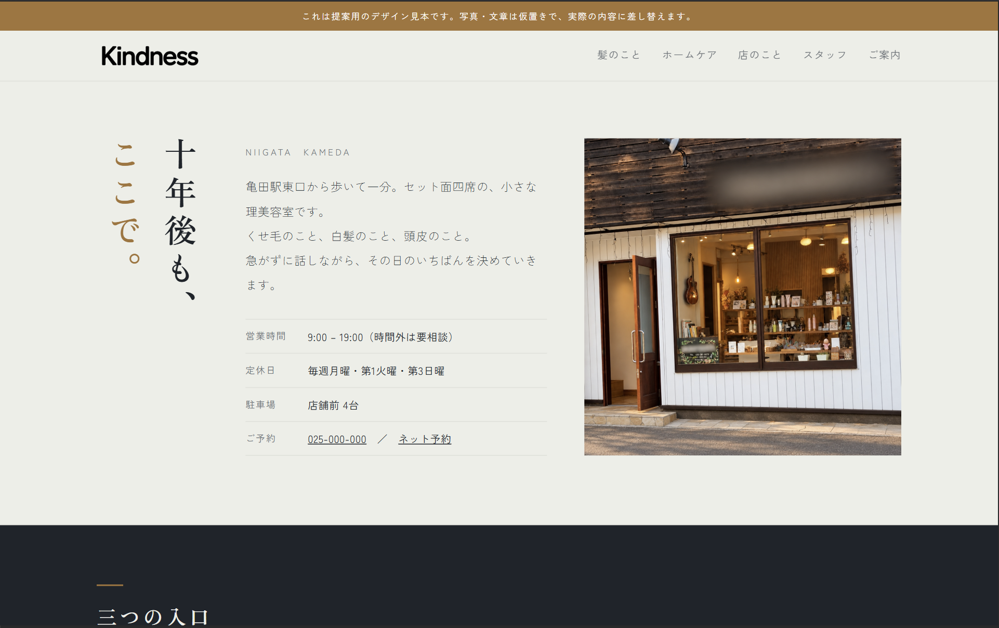
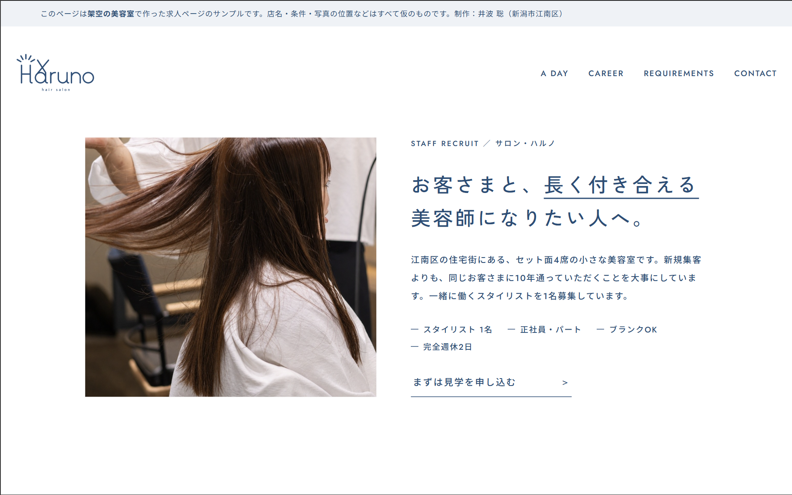
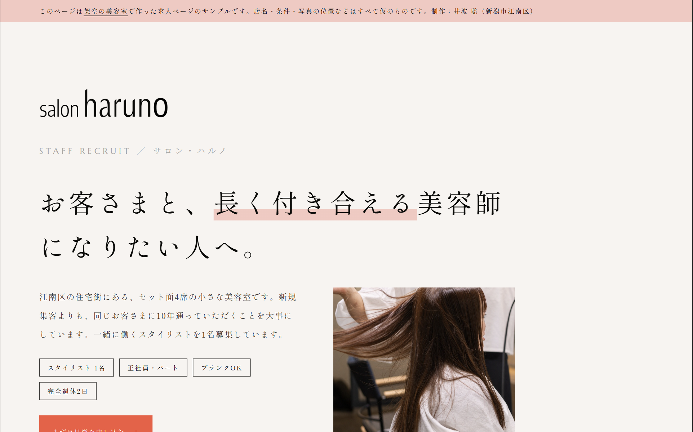

Webサイト制作（勉強中）
江南区のお店のための、
デザイン案。
新潟市江南区・亀田周辺のお店に向けて、提案用につくったWebサイトのデザイン案です。気になるものを開くと、実際に動くページを見られます。
掲載しているのは、各店舗へのご提案のために、私が自主的に作成したデザインのサンプルです。ご依頼を受けて制作したものではなく、お店の公式サイトでもありません。写真・文章には仮のものを含みます。詳しくはこちら
デザイン案
4件-

提案用サンプル美容室（七五三・成人式の着付け）｜江南区亀田 七五三・成人式の着付け 七五三・成人式の当日、朝の流れが前もって分かる季節限定のページ。 デザイン案を開く -

提案用サンプル美容室｜江南区亀田 Kindness 「十年後も、ここで。」長く通うお客様に向けた、縦書きの落ち着いた構成。 デザイン案を開く -

提案用サンプル美容室の求人ページ｜江南区（架空の店舗） salon haruno A案 写真を大きく見せ、働き方の条件がひと目で分かる求人ページ。 デザイン案を開く -

提案用サンプル美容室の求人ページ｜江南区（架空の店舗） salon haruno B案 「お客さまと、長く付き合える美容師になりたい人へ。」落ち着いた明朝体の求人ページ。 デザイン案を開く